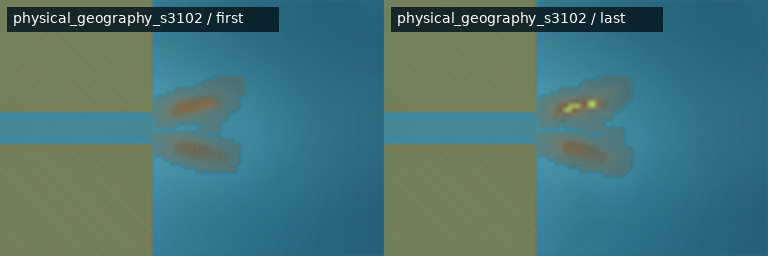
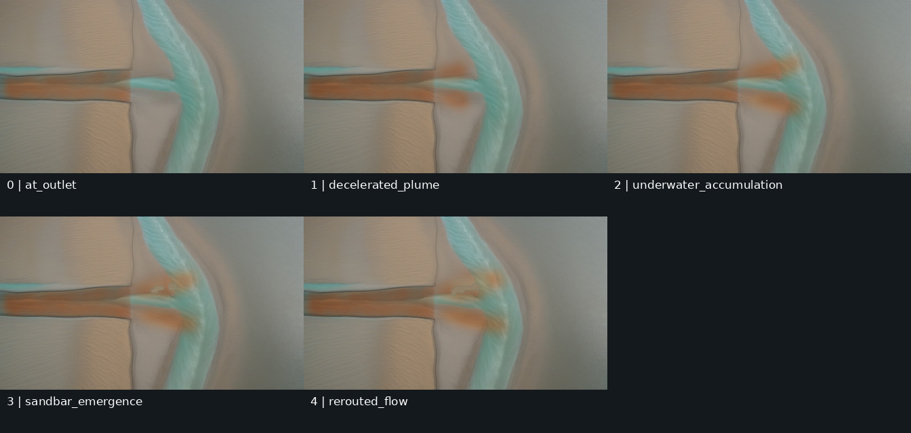

{kind=link}
{kind=link}
数学
MATH-02 勾股定理的拼图重排证明
主要验证：exact_geometry、rigid_transform、area_conservation
Stage 2 · Phase 0 · Loop 正式启动
这一阶段没有生成新图片。它把十个跨学科案例、Stage 1 参考结果、 评分办法、回归层级和每轮预算固定下来。后面的 Agent 每次声称“变好了”，都必须拿 这些不随实验改变的证据来验证。
Phase 0 自动检查全部通过01 · 本阶段结果
“冻结”是什么意思？ 这些案例 ID、参考文件哈希、 评分权重和种子组成为版本化输入。Agent 可以提出新策略，但不能为了让分数好看而 悄悄换关键帧、换参考图或换评分办法。
02 · 历史基线
跨概念图片不能直接计算像素相似度。下面的三角洲结果只用来比较四件事：材料是否 自然、固定场景是否稳定、机制变化是否清楚、模型伪影是否更少。


诚实的基线说明：Stage 1 的最终图大量依靠程序区域 和固定背景合成来守住机制；SDXL 原始全图候选没有直接成为最终像素。因此 Stage 2 既要保住机制一致性，也要单独证明图像模型确实改善了材料。
03 · 案例注册表
“主要数据层”决定生成路线。例如连续浓度不应该被强行变成线稿；精确拼图也不能 只靠一句提示词维持数量和面积。
| ID | 学科 | 概念 | 主要程序数据层 | 首批哨兵 |
|---|---|---|---|---|
MATH-01 | 数学 | 单位圆怎样生成正弦曲线 | 硬边界对象身份教学叠加 | 否 |
MATH-02 | 数学 | 勾股定理的拼图重排证明 | 硬边界对象或允许修改区域对象身份教学叠加 | 是 |
PHYS-01 | 物理 | 两个同步振源产生的水面波干涉 | 连续标量场高度或法线对象身份教学叠加 | 是 |
PHYS-02 | 物理 | 磁铁运动为什么在线圈中产生感应电流 | 硬边界连续标量场矢量场对象身份教学叠加 | 否 |
CHEM-01 | 化学 | 酸碱滴定从局部变色到到达终点 | 硬边界对象或允许修改区域连续标量场对象身份教学叠加 | 是 |
CHEM-02 | 化学 | 盐溶液蒸发、过饱和与晶体生长 | 对象或允许修改区域连续标量场对象身份教学叠加 | 否 |
BIO-01 | 生物 | 一个动物细胞的有丝分裂 | 对象或允许修改区域矢量场对象身份教学叠加 | 是 |
BIO-02 | 生物 | 气孔保卫细胞吸水后怎样打开气孔 | 对象或允许修改区域连续标量场矢量场对象身份教学叠加 | 否 |
GEO-01 | 地理 | 曲流发展、裁弯取直与牛轭湖形成 | 硬边界对象或允许修改区域连续标量场矢量场高度或法线教学叠加 | 否 |
GEO-02 | 地理 | 地形雨与背风坡雨影 | 连续标量场矢量场高度或法线教学叠加 | 是 |
完整的教学片段、模型职责和案例硬门禁见 case.txt；机器读取的稳定 ID 与能力标签见 case_registry.json。
04 · 第一批实现顺序
哨兵不是最容易的五个，而是用较少案例尽早暴露不同失败方式。通过它们之后，再把 路线扩展到剩余五个案例。
数学
MATH-02 勾股定理的拼图重排证明主要验证：exact_geometry、rigid_transform、area_conservation
物理
PHYS-01 两个同步振源产生的水面波干涉主要验证：periodic_phase、continuous_field、control_route_off
化学
CHEM-01 酸碱滴定从局部变色到到达终点主要验证：transparent_mixing、local_threshold、volume_conservation
生物
BIO-01 一个动物细胞的有丝分裂主要验证：many_object_identity、deformable_region、division_topology
地理
GEO-02 地形雨与背风坡雨影主要验证：fixed_terrain、coupled_fields、hidden_variable
05 · 固定评分尺
每个软评分维度由评审给 0–5 分，再按
该维度权重 × 评分 ÷ 5 换算。硬门禁失败时，不能用材质分抵消机制错误。
| 维度 | 权重 | 普通话问题 |
|---|---|---|
| 机制忠实度 | 25 | 程序定义的位置、数量、范围、拓扑和先后关系是否正确？ |
| 跨帧一致性 | 20 | 镜头、背景、固定物体、材质尺度和光照是否稳定？ |
| 材质提升 | 15 | 与程序底图相比是否更像真实材料，而不是塑料、贴图或刻痕？ |
| 教学可读性 | 15 | 第一次观看的人能否指出本帧发生的主要变化？ |
| 伪影控制 | 10 | 是否避免多余物体、文字泄漏、硬描边、结构融化和重复纹理？ |
| 种子稳健性 | 10 | 固定种子组中的多数候选是否有效，而不是只靠一张幸运结果？ |
| 可复现与可审计 | 5 | 参数、哈希、中间图和选择依据是否齐全？ |
| 维度 | 权重 | 普通话问题 |
|---|---|---|
| 首尾遵守 | 20 | 第一帧和最后一帧是否忠实于输入？ |
| 中间机制 | 25 | 中间运动是否沿程序允许的路径推进？ |
| 时间连续性 | 20 | 是否没有闪烁、跳变、倒退和突然出现？ |
| 场景稳定性 | 15 | 镜头、背景和固定物体是否不漂移？ |
| 运动自然度 | 10 | 速度和形变是否可信？ |
| 视频教学可读性 | 10 | 过渡是否帮助理解，而不只是视觉变形？ |
尺寸、模式、哈希和 manifest 对应
案例 evaluator 验证数量、位置、身份、拓扑和因果顺序
静态区域差异不超过案例配置阈值
写实底图不含 UI、图例、箭头、标签或模型生成文字
模型原图、程序约束结果与最终交付分别保存
实际 tokenizer 记录证明提示词没有静默截断
模型、权重指纹、精度和运行时与登记配置一致
视频端点与输入关键帧对应且没有换场
06 · 分层回归
十个案例全部检查 schema、状态、语义层、控制来源、 manifest 和报告链接；不加载模型。
当前案例 + 至少两个其他学科的同数据类型案例 + Stage 1 三角洲。用于判断策略能否成为通用候选。
数学、物理、化学、生物、地理各一个固定哨兵， 用于阶段版本的图片回归。
十案例契约全部通过；五学科图片代表和五类运动视频 代表全部通过；三角洲不退化。
| 运动类型 | 固定代表案例 |
|---|---|
| 刚体运动 | MATH-02 |
| 连续场传播 | PHYS-01 |
| 液体混合 | CHEM-01 |
| 对象分裂 | BIO-01 |
| 边界拓扑变化 | GEO-01 |
07 · 单轮预算
固定复现编号为：3101、3102、3103、3104。它们只是模型噪声起点的编号，
不是材料名，也不代表某个案例。固定四个编号是为了计算成功率；至少 3/4 有效，才达到
当前协议的 75% 种子稳健性阈值。
连续三轮目标维度提升不足 2 分、硬门禁失败、输入基线变化、 模型身份不符或只有一个种子成功时，当前 loop 必须停止并记录证据。
08 · 自动验证与复现
报告由同一份机器配置生成。下面的检查在生成前执行；任一失败，报告构建命令会以 错误退出。
| 检查 | 结果 | 证据 |
|---|---|---|
| ten_unique_cases | 通过 | {"count": 10, "case_ids": ["MATH-01", "MATH-02", "PHYS-01", "PHYS-02", "CHEM-01", "CHEM-02", "BIO-01", "BIO-02", "GEO-01", "GEO-02"]} |
| two_cases_per_discipline | 通过 | {"biology": 2, "chemistry": 2, "geography": 2, "mathematics": 2, "physics": 2} |
| one_sentinel_per_discipline | 通过 | ["MATH-02", "PHYS-01", "CHEM-01", "BIO-01", "GEO-02"] |
| case_text_matches_registry | 通过 | "modules/video_model/stage2/case.txt" |
| image_score_weights | 通过 | {"total": 100} |
| video_score_weights | 通过 | {"total": 100} |
| hard_gates_defined | 通过 | ["file_manifest_integrity", "case_mechanism_facts", "fixed_scene_drift", "annotation_leakage", "raw_composite_final_separation", "prompt_token_integrity", "model_runtime_identity", "video_endpoint_identity"] |
| score_record_schema | 通过 | ["dimensions", "hard_gates", "protocol_id", "subject_id", "total_points", "verdict"] |
| all_case_contract_smoke | 通过 | ["MATH-01", "MATH-02", "PHYS-01", "PHYS-02", "CHEM-01", "CHEM-02", "BIO-01", "BIO-02", "GEO-01", "GEO-02"] |
| five_discipline_representatives | 通过 | ["MATH-02", "PHYS-01", "CHEM-01", "BIO-01", "GEO-02"] |
| five_video_motion_representatives | 通过 | {"rigid_motion": "MATH-02", "continuous_field_propagation": "PHYS-01", "liquid_mixing": "CHEM-01", "object_division": "BIO-01", "boundary_topology_change": "GEO-01"} |
| fixed_seed_budget | 通过 | [3101, 3102, 3103, 3104] |
| single_hypothesis_budget | 通过 | {"maximum_primary_hypotheses": 1, "representative_frames_before_full_sequence": 1, "maximum_candidate_configurations_including_baseline": 3, "maximum_new_image_candidates": 12, "maximum_full_keyframe_sequences": 1, "maximum_video_trials_after_image_gates": 2, "minimum_cross_discipline_route_cases": 2} |
| phase_0_zero_model_runs | 通过 | {"image_model_runs": 0, "video_model_runs": 0} |
| stage1_baseline_hashes | 通过 | {"asset_count": 14, "roles": ["delta_frame_00", "delta_frame_01", "delta_frame_02", "delta_frame_03", "delta_frame_04", "delta_sequence_contact_sheet", "delta_sequence_report", "selected_pair_comparison", "selected_pair_first", "selected_pair_last", "selected_pair_report", "video_transition", "video_transition_metadata", "video_transition_samples"]} |
.venv/bin/python -m modules.video_model.stage2.phase0 .venv/bin/python -m modules.video_model.stage2.phase0 --check .venv/bin/python -m pytest -q modules/video_model/stage2/tests
Phase 0 的配置文件：
09 · 下一检查点
下一步会实现统一的概念规格、序列规格和七类语义层接口，并为十个案例建立最小 fixture。仍然先证明状态、控制和报告可复现，再进入五个哨兵案例的程序动画。
{kind=link}
{kind=link}
{kind=link}
{kind=link}
{kind=link}
{kind=link}
{kind=link}
{kind=link}